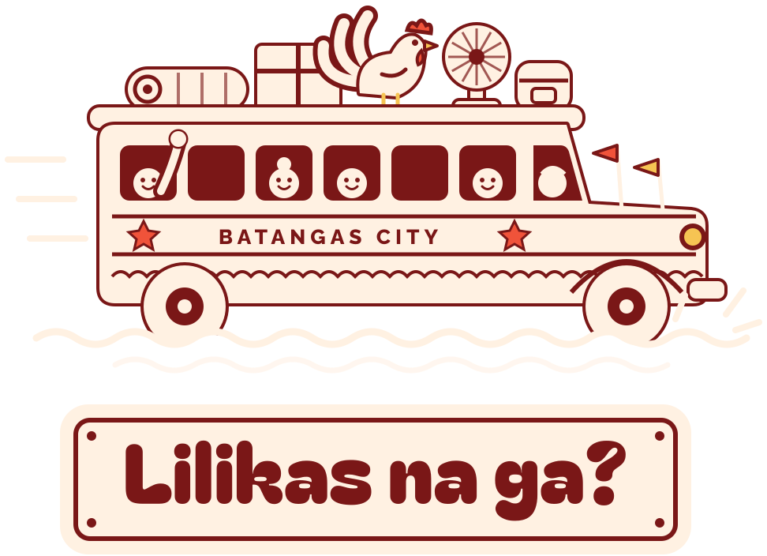

Batangas City’s guide to hazard risk, official alerts and safe evacuation. Free, in English and Filipino.

Know what an advisory means for your area and what to do next.
Open alertsUnderstand the message, the source and what to do next.
High · Prepare AdvisoryCompare open centers and see the route before you leave.
Open hazard mapYour risk, alerts and emergency contacts in one tap.
Open on your phonePack your go bag, plan where to meet and keep contacts handy.
Open checklistCreate a free account to save your barangay and get alerts, or explore as a guest.
In immediate danger? Call 911.